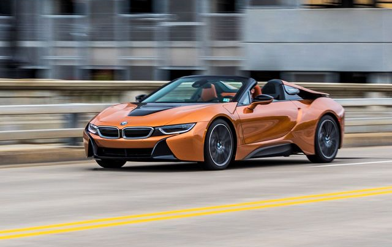
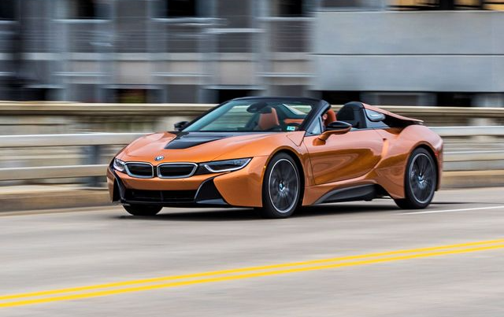
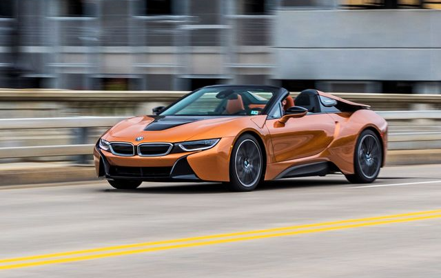
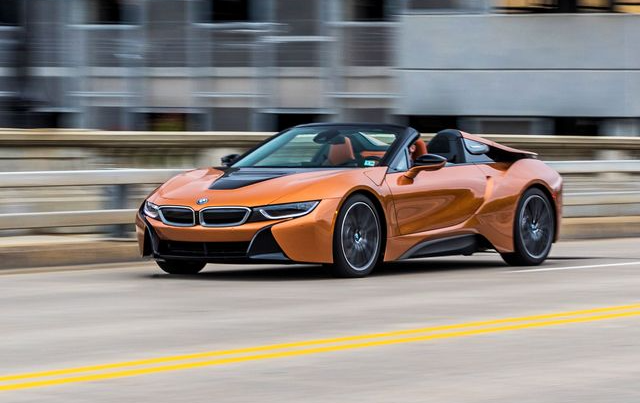

The 2015 BMW i8 accelerated from 0 to 100 km/h (62 mph) in 4.4 seconds and had an electronically limited top speed of 250 km/h (155 mph). The 2015 model year i8 had a 7.1-kWh lithium-ion battery pack that delivered an all-electric range of 37 km (23 mi) under the New European Driving Cycle. Under the U.S. EPA cycle, the range in EV mode was 24 km (15 mi). The battery capacity of both the BMW i8 Roadster and the i8 Coupe was increased to 11.6 kWh in 2018, allowing the NEDC electric range to rise to 55 km (34 mi) for the coupé and 53 km (33 mi) for the roadster. The BMW i8 coupé had a fuel efficiency of 2.1 L/100 km (134.5 mpg‑imp; 112.0 mpg‑US) under the NEDC test with carbon emissions of 49 g/km. The EPA rated the i8 combined fuel economy at 76 MPGe (3.1 L gasoline-equivalent/100 km; 91 mpg-imp gasoline-equivalent) and 29 miles per gallon (6.7L/100 km) when running in pure gasoline mode.